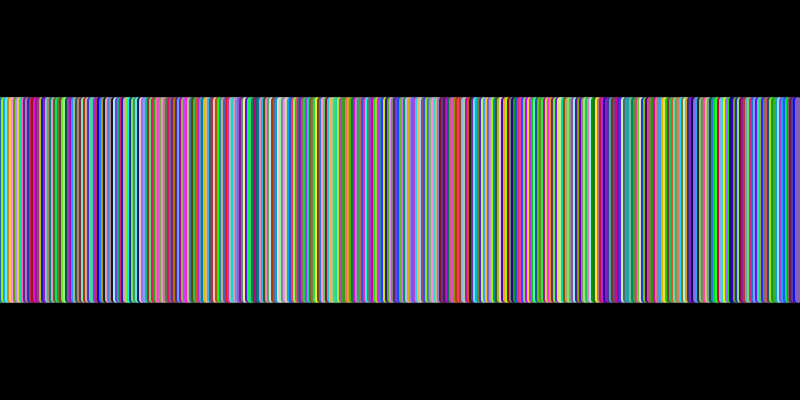
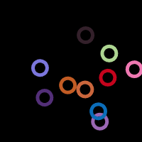
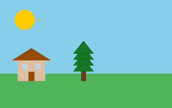
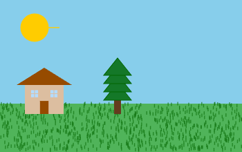
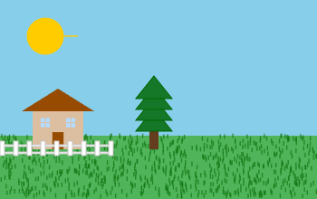
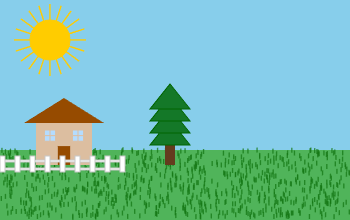
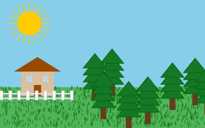
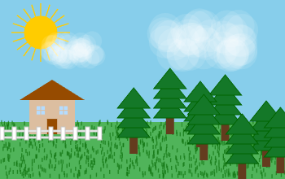

In the Iterative Number Patterns assignment, we relied on the
draw() function's repetition to help us create a repeated pattern. This made designs that developed over time, as each new frame added more to the image.
Now that we have for loops, we can create the entire design in a single call to draw(), making the full design appear in the very first frame.

Open the For Loop Line Fill example. There you will find code that is similar to what you've done before. It draws randomly colored vertical lines across the screen at
x = 0, x = 1, x = 2, and so on. The difference this time is that the x pattern is represented with a loop:
for (let x = 0; x < width; x++) {
stroke(random(256), random(256), random(256));
line(x, 50, x, 150);
}
This loop starts x at 0 and increments it by 1 each step until it reaches the width of the canvas. When you run this code, notice that the design appears immediately in a single frame.
noLoop()?
Notice the call to noLoop() in the setup() function. This function tells p5 that it should only call the draw() function once.
This is important here because we're using random numbers. If the draw() function were called repeatedly, each frame would have completely different colored lines, and the drawing would constantly change instead of staying as a single
finished picture.
Open the For Loop Square Spacing workspace.
Your task is to recreate the design from your Iterative Pattern: Square Spacing assignment, but this time using a for loop instead of relying on the repeated calls to draw().
An example showing the first few squares has been provided for you, but your final solution should use a single for loop to draw all of the squares in the pattern.
Open the For Loop Circle Ring workspace.
Your task is to recreate the design from your Iterative Pattern: Circle Ring assignment, but using a for loop instead. Again, an example showing the first few circles has been provided, but your solution should use a loop to draw all of them.
Specifically, use a loop to draw circles with sizes from 50 through 100 (inclusive), following the same pattern as your original iterative version.

Open the Ten Rings workspace.
Once again, your task is to generate the same image you did before, but this time using a
loop to draw all of the rings in a single frame. Instead of relying on the repeated calling of draw(), use a for loop to create the full pattern at once.
Open the Drawing a Scene workspace. This program is intended to draw a full outdoor scene, but most of the functions are incomplete. As a result, only a small portion of the scene appears.

Your task is to implement each of the missing functions using loops to complete the scene.

Locate the drawGrass() function. The grass is made up of many small vertical lines.
Write a loop that will:
x and y in the bottom portion of the canvas:
x should be between 0 and width.y should be between 150 and height (the bottom of the canvas).
x, y - 5).
When you are done, run the program to make sure the grass looks similar to the reference image shown in class.

Locate the drawFence() function. The fence is made up of horizontal rails and vertical posts.
Fence rails: The rails are two long horizontal rectangles. Draw these first so that they appear behind the posts.
Fence posts: The posts are made of a series of rectangles with:
y = 156x coordinates are all 15 pixels apart, ranging from
0 to 120.
Use a for loop to generate these x values and draw each post. Then run the program to verify that the fence looks correct.

Locate the drawSun() function. It starts by drawing the circle of the sun, and then draws a single ray using translation and rotation:
// draw a rotated line
resetMatrix();
translate(50, 40); // translate to sun center
rotate(0); // rotate
line(0, 0, 36, 0); // draw line
The line is drawn this way so that it can be easily rotated to different angles by changing the value passed to rotate().
Your task is to draw rays going out in all directions around the sun.

Locate the drawTrees() function, which is responsible for drawing a forest to the right of the house.
A helper function drawTree(x, y) has been provided for you. It draws a single tree with its base at the given (x, y) position. One example call is:
drawTree(170, 160);
We want to place trees at random x positions, but we also want them to overlap in a way that looks natural. To do this, we'll control the y values so that trees in the back (smaller y) are drawn first, and trees
in the front (larger
y) are drawn later.
Write a for loop where the loop variable represents y:
y loop from 150 to 220.y by 10 each step.x between 145 and 350.drawTree(x, y) to draw a tree at that position.
Because you are drawing smaller y values first, the trees with larger
y (closer to the front) will naturally overlap those behind them, creating better depth.

Locate the drawCloud() function. Clouds are created by drawing many circles at random positions within a given area. The circles will be slightly transparent so that when they overlap, they form a soft, wispy texture.
The function has four parameters representing the cloud's position and size:
(cx, cy, cw, ch), where:
cx, cy is the top-left corner of the cloud area.cw is the cloud's width.ch is the cloud's height.We are going to use 40 circles to draw each cloud. Write a loop that will iterate 40 times. Each time, draw a circle with:
x chosen between cx and cx + cw.
y chosen between cy and cy + ch.
ch / 2.
When you are finished, run the program to check that the clouds, trees, sun, fence, and grass all come together to form the complete scene.